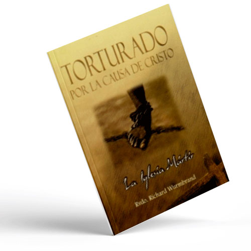
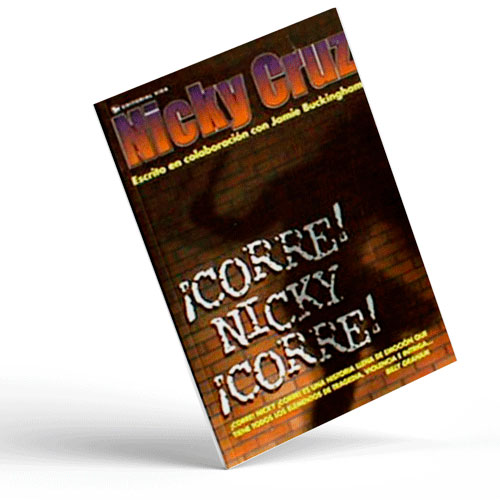

Santa Biblia RV1960 Edición letra grandeLa Biblia es una colección de libros sagrados escritos por profetas antiguos e historiadores. Estos autores registraron la relación entre Dios y su pueblo por más de 4,000 años. Sus palabras inspiradas son lo que hoy conocemos como la Santa Biblia Jesucristo es el Hijo de Dios que vino a la tierra para salvarnos del pecado, la tristeza, la soledad, el dolor y más. Jesús enseñó lecciones hermosas sobre el servicio y el amor y realizó muchos milagros mientras estuvo en la tierra. En la Biblia, podemos leer estas historias y empezar a conocer cómo podemos vencer las cosas difíciles con la ayuda de Jesús. $13.990 (IVA incluido) |
|
|  |
Torturado por Cristo - Richard WurmbrandTorturado por la causa de Cristo, relata la continua tortura física, hambre, frío y angustia producidas por el «lavado de cerebro» y crueldad infrahumana, a que son sometidos miles de cristianos en las cárceles de países comunistas, donde son perseguidos por causa de su fe en Jesucristo. Es el testimonio viviente de un pastor rumano que experimentó y presenció meses de solitario encierro y 14 años de torturas de toda índole, como resultado de la despiadada persecución en contra de todo el que hable de Cristo y su doctrina. ¿Cuál fue su crimen? Al igual que el de muchos otros que han sido y están siendo torturados, su ferviente fe en Jesucristo y el testimonio público de ella. Reunidos en hogares, sótanos, bosques, algunas veces abiertamente en esquinas y parques públicos, estos fieles persisten en declarar su fe en Cristo, aún a pesar de las crueles consecuencias que experimentan por esta razón. Es un relato de valor, fe e increíble y milagrosa resistencia, de nuestros hermanos perseguidos, que debe animarnos a perseverar y a orar por todos los que sufren por la causa de Cristo. $13.990 (IVA incluido) |
|  |
¡Corre! Nicky ¡Corre! - Nicky CruzCuando comenzó su ministerio en las calles de Nueva York, David Wilkerson no sospechaba que Dios haría milagros tan grandes. La historia de Nicky Cruz, el insensible jefe de pandilla, es un testimonio impresionante. Ésta es la historia emocionante de cómo Nicky Cruz se escapó de los barrios bajos de su país en un esfuerzo desesperado para una vida mejor. Es la biografía de un joven que venció el alcoholismo y los crímenes de violencia para llegar a ser una inspiración para los jóvenes en todo el mundo. $13.990 (IVA incluido) |